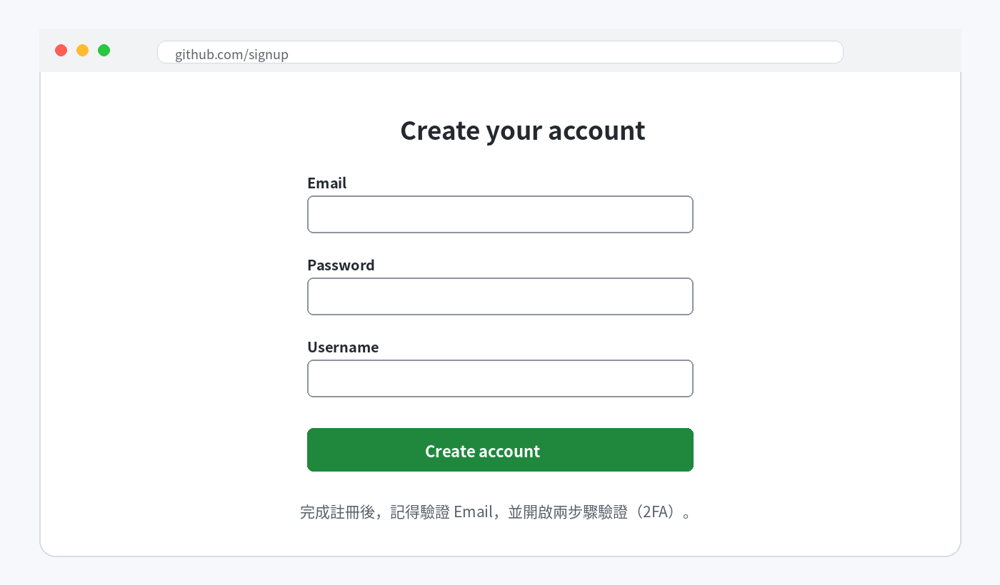
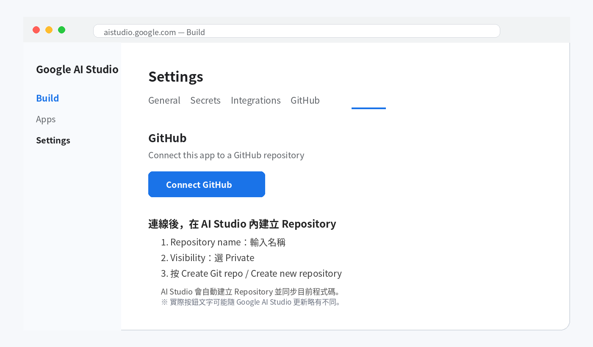
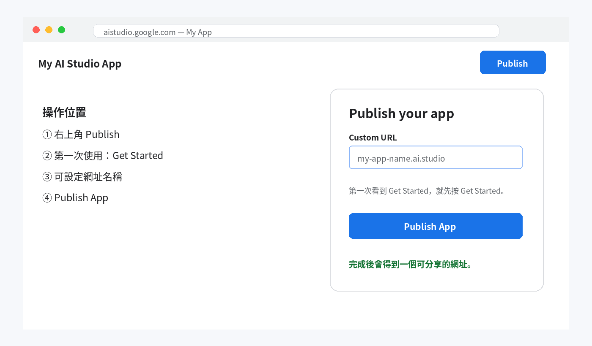
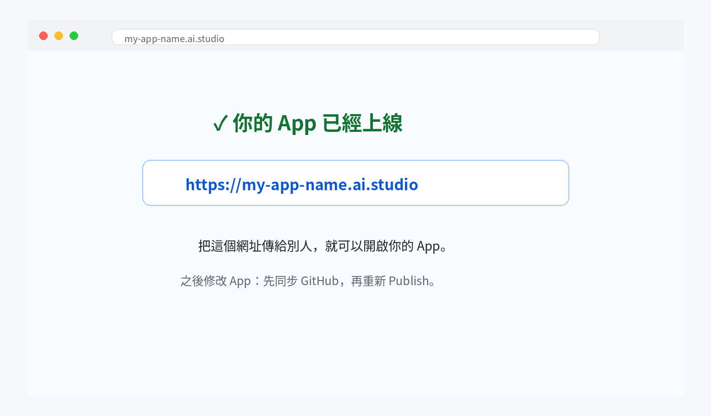

先搞懂：GitHub 不是「上線網站」
這個流程只有四件事：
| 1 Google AI Studio 做 App |
2 GitHub 保存程式碼版本 |
3 Publish 把 App 放到網路上 |
4 網址 別人可以直接開 |
|---|
| 資安上最重要的觀念：GitHub 建議使用 Private（私人）Repository；API Key、密碼、Token 不要放進 GitHub。 |
|---|
開始前，請先確認
• 你已經有一個可以正常預覽的 Google AI Studio「網頁 App」專案。
• 你可以登入 Google AI Studio 使用的 Google 帳號。
• 準備一個常用 Email，用來註冊 GitHub（如果還沒有 GitHub）。
步驟 1｜沒有 GitHub？先建立帳號
• 按 Sign up / Create account。
• 依畫面填 Email、密碼、使用者名稱。
• 到信箱完成 Email 驗證。
• 建議開啟兩步驟驗證（2FA），避免帳號只靠密碼保護。

操作位置示意：按鈕名稱或位置可能因 Google AI Studio 更新略有不同。
步驟 2｜在 Google AI Studio 連動 GitHub，並建立 Private Repository
• 回到你的 Google AI Studio App。
• 點上方的 GitHub 圖示；如果找不到，也可以打開 Settings（設定）→ GitHub。
• 第一次使用時，按 Connect GitHub，依畫面登入並授權。
• Repository name：輸入名稱，例如 my-ai-studio-app；Visibility：選 Private。
• 按 Create Git repo / Create new repository。AI Studio 會建立 Repository，並把目前 App 程式碼同步到 GitHub。

操作位置示意：按鈕名稱或位置可能因 Google AI Studio 更新略有不同。
| GitHub 顯示「授權」畫面時，代表你正在允許 Google AI Studio 存取
GitHub。 如果可以選範圍，建議只授權需要使用的 Repository。 |
|---|
上線前，先請 AI Studio 自己檢查一次
在 Prompt 輸入：「請檢查目前 App 是否有 build error；如果有，請直接修正，並確認目前版本可以部署。」
步驟 3｜正式上線，取得網址
GitHub 已經保存目前版本。接下來把 App 放到網路上。
• 回到 Google AI Studio App。
• 按右上角 Publish。
• 第一次使用如果看到 Get Started，先按 Get Started。
• Custom URL 可輸入想要的網址名稱；若名稱已被使用，就換一個。
• 按 Publish App。

操作位置示意：按鈕名稱或位置可能因 Google AI Studio 更新略有不同。
| 發布時可能會使用 Google Cloud Run，並可能要求選擇 Google Cloud project 或設定計費。是否產生費用，會依實際使用量與帳號方案而定。 |
|---|
完成｜你會拿到一個網址
發布完成後，畫面會提供網址。把網址貼到新的瀏覽器分頁確認可以打開。

操作位置示意：按鈕名稱或位置可能因 Google AI Studio 更新略有不同。
| 建議最後測試 3 件事： 1. 手機可以開 2. 無痕模式可以開 3. App 的主要功能可以正常使用 |
|---|
之後修改 App，要怎麼更新？
最簡單的記法：
| ① 在 AI Studio Prompt 說明要修改什麼 |
② Push changes 到 GitHub |
③ 重新 Publish |
|---|
| GitHub 的用途是保留「程式碼版本」。它不會自動保存使用者在 App 裡輸入的資料。 |
|---|
如果卡住，先看這裡
| 找不到 GitHub Repository | 確認 Repository 是你建立的，且 AI Studio 已取得 GitHub 授權。 |
|---|---|
| Publish 失敗 | 回到 AI Studio Prompt 輸入：「請修正目前的 build error，並確認可以部署。」修正後再重新 Publish。 |
| 網址打得開，但 AI 功能不能用 | 檢查 Settings → Secrets；不要把 API Key 貼到 GitHub。 |
| 修改後網址內容沒變 | 確認已同步最新版本，並重新 Publish。 |
最後補充｜這種部署方式要注意什麼？
• GitHub 存的是「程式碼」，不是使用者資料。
• 如果 App 沒有接資料庫，使用者新增或修改的資料，重新整理或重新部署後可能不會保留。
• 如果需要保存資料，可以在 AI Studio Prompt 說：「請幫這個 App 加上 Firebase Firestore，讓資料可以長期保存。」完成後要再實際測試一次。
• 不要把 API Key、密碼或公司機密直接寫進程式碼；請放在 AI Studio 的 Secrets。
• 網址公開後，拿到網址的人可能都能使用 App；如果內容敏感，應另外做登入或權限控管。
• AI 功能可能有使用量或費用限制；正式大量使用前，先確認 Google AI Studio / Gemini API 的用量與計費設定。
| 簡單記住：GitHub 用來保存程式碼版本；Secrets 用來放金鑰；要保存使用者資料，App 需要資料庫。 |
|---|
官方參考
GitHub — Getting started with your account
文件依 2026-08-29 可取得的官方資訊製作。Google AI Studio 與 GitHub 介面可能隨更新略有變動。